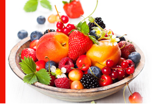
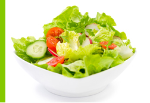
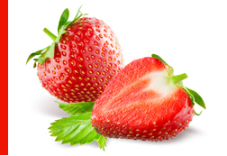
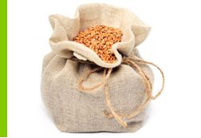
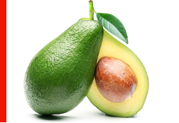
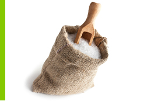
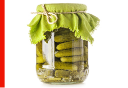
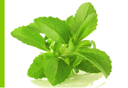

 Żywienie dzieci i młodzieży w wieku szkolnym
Dzieci i młodzież potrzebują więcej energii niż dorośli. Ich organizm rośnie, zmienia
się i potrzebuje wszystkich niezbędnych składników odżywczych dlatego dieta
nastolatka powinna być odpowiednio zbilansowana.
Czytaj więcej >
 Nowalijki
Wiosna to czas nowalijek. Nowalijki to wczesne, młode warzywa, które pojawiły się
po raz pierwszy w danym roku. Zaliczamy do nich: rzodkiewkę, sałatę, pomidora,
ogórka, natkę pietruszki, szczypior i inne.
Czytaj więcej >
 Truskawkowe wariacje
Zbliża się sezon na truskawki. Niemal każdy czeka na nie z utęsknieniem. Poza tym,
że są pyszne i można z nich zrobić mnóstwo dań to zawierają witaminy: C, B2, B1, A
oraz wapń, fosfor (cenne dla kości i zębów), magnez i żelazo (chronią przed anemią)
oraz mangan.
Czytaj więcej >
 Niedoceniane kasze
Dlaczego warto je jeść?
Pod względem wartości odżywczej kasze przewyższają makaron, ziemniaki i ryż. Są
świetnym źródłem węglowodanów złożonych, które powoli rozkładają się na glukozę
potrzebną do pracy wszystkich komórek organizmu.
Czytaj więcej >
 Awokado "Masło Bogów"
Jest bogactwem cennych składników, pozwala uniknąć poważnych chorób cywiliza -
cyjnych. Ma właściwości odchudzające. Awokado zawiera znaczące ilości witamin B9,
B6, K, E i C, a także: karoteny, białko oraz sporo magnezu, wapnia i fosforu.
Czytaj więcej >
 Trochę o soli w żywności
Dzienne zapotrzebowanie na sól zależy od wieku, aktywności fizycznej, temperatury
otoczenia. W celu pokrycia strat sodu (straty sodu z potem, kałem, moczem) dorosły
człowiek w klimacie umiarkowanym, przy aktywności fizycznej nie powodującej pocenia
się powinien spożywać ok. 115mg sodu dziennie.
Czytaj więcej >
 Kiszenie warzyw i owoców
Zbliża się lato, czas zbiorów warzyw dlatego warto wspomnieć kilka słów jak zachować
warzywa do kolejnej wiosny. Jednym ze sposobów jest kiszenie. Kiszenie to najzdro -
wszy i najłatwiejszy sposób na wartościowe warzywa i owoce.
Czytaj więcej >
 STEWIA E960 - ZAMIAST CUKRU
Roślina o wysokiej zawartości substancji słodzących, używana do słodzenia napojów
i potraw. Charakteryzuje się niską kalorycznością w stosunku do tradycyjnego cukru.
Ma właściwości obniżające ciśnienie, przeciwbakteryjne, przeciwgrzybiczne.
Czytaj więcej >